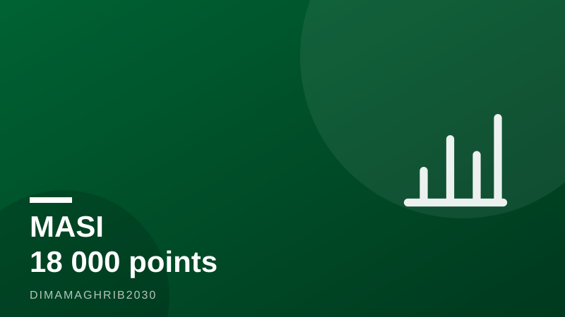

Bourse de Casablanca : le MASI refranchit les 18.000 points — l'été où le Maroc passe la cinquièmeCasablanca's Summer Rally: MASI Tops 18,000 as Morocco's Economy Shifts Into High Gear

Il y a des seuils qui ne sont que des chiffres, et d'autres qui racontent une histoire. Le 4 août 2026, le MASI a bondi de +1,05% pour clôturer à 18.063,39 points, refranchissant la barre symbolique des 18.000 points, selon Boursenews. Dans la foulée, l'indice phare de la Bourse de Casablanca évoluait autour de 18.369 points ce 6 août, en hausse de 0,21%, d'après les données de la Bourse de Casablanca. La perte depuis le début de l'année s'est ainsi réduite à -4,15% — un chiffre encore négatif, mais qui fond comme neige au soleil d'août.
Car c'est bien de soleil qu'il s'agit. Pendant que les terrasses de la Corniche affichent complet, la place casablancaise vit ce que les opérateurs appellent déjà son « rallye estival ». Et cette fois, il s'appuie sur des fondamentaux qui donnent le vertige : le Haut-Commissariat au Plan (HCP) prévoit une accélération de la croissance marocaine de 4,8% au deuxième trimestre à 5,4% au troisième trimestre 2026.
Un été qui réussit historiquement au MASI
Les statistiques plaident pour les optimistes. Comme le rappelle Médias24, la saisonnalité estivale sourit régulièrement à l'indice casablancais : entre la mi-juillet et la fin août, le MASI a gagné +4,06% en 2023, +3,72% en 2024 et près de 6% en 2025. Trois étés, trois hausses. Les raisons sont connues des habitués : volumes plus fins, retour des Marocains du monde qui réinjectent de l'épargne, dividendes réinvestis et, surtout, un momentum psychologique où chaque bonne nouvelle macroéconomique trouve un marché disposé à l'écouter.
Pour ceux qui envisagent d'investir en bourse au Maroc, la question n'est plus de savoir si le rebond est réel, mais s'il peut transformer une année 2026 jusqu'ici décevante en millésime honorable. Le retour au-dessus des 18.000 points constitue, techniquement et symboliquement, la première réponse.
Une économie qui passe la cinquième
Derrière les écrans de cotation, c'est toute la machine économique marocaine qui monte en régime. La prévision du HCP d'une croissance de 5,4% au T3 2026 repose notamment sur un investissement en plein essor : +11,1%, selon les chiffres relayés par Le Matin et Médias24. Chantiers d'infrastructures, préparatifs de la Coupe du monde 2030, dynamique industrielle : l'investissement tire, et la Bourse en prend note.
Les finances publiques envoient le même signal. Aujourd'hui le Maroc rapporte que les ressources de l'État ont franchi 418 milliards de dirhams à fin juin 2026, tandis que les dépenses d'investissement atteignaient 62,2 milliards de dirhams, soit un taux d'exécution de 45,7% à mi-parcours. Autrement dit, l'État dépense, et il dépense là où cela compte.
Le Trésor respire, le marché aussi
Dernier indice de cette aisance budgétaire : le Trésor lève le pied. Selon InfoMagazine, ses besoins de financement pour août sont estimés entre 5 et 5,5 milliards de dirhams, contre 5,5 à 6 milliards en juillet. Un Trésor moins gourmand, c'est moins de pression sur les taux, et donc un environnement plus favorable aux actions — mécanique bien connue des salles de marché.
Reste la prudence d'usage : les étés boursiers se jouent sur des volumes réduits, et un choc externe peut vite doucher l'euphorie. Mais entre une croissance qui accélère, un investissement à deux chiffres et un indice qui a retrouvé ses 18.000 points, la Bourse de Casablanca aborde la fin de l'été 2026 avec un argument rare : cette fois, le rallye a des fondations.
Some numbers are just numbers. Others tell a story. On August 4, 2026, the MASI, the flagship index of the Casablanca Stock Exchange, jumped 1.05% to close at 18,063.39 points, vaulting back above the symbolic 18,000-point threshold, according to financial news outlet Boursenews. By August 6, the index was hovering around 18,369 points, up another 0.21%, per Casablanca Bourse data. The year-to-date loss has narrowed to -4.15% — still red on the screen, but fading fast under the August sun.
And the sun is very much part of the story. While Casablanca's beachfront cafes fill up, the trading floor is living through what local operators are already calling a genuine Morocco stock market rally. This time, it comes with macroeconomic tailwinds that are hard to ignore: the Haut-Commissariat au Plan (HCP), Morocco's national statistics agency, forecasts GDP growth accelerating from 4.8% in the second quarter to 5.4% in the third quarter of 2026.
Summer Has a Track Record in Casablanca
History is on the bulls' side. As financial news site Médias24 points out, summer seasonality has consistently favored the MASI: between mid-July and the end of August, the index gained 4.06% in 2023, 3.72% in 2024, and roughly 6% in 2025. Three summers, three rallies. Market veterans know the recipe — thinner volumes, the return of Moroccans living abroad channeling savings back home, reinvested dividends, and a psychological momentum in which every piece of good macro news finds a receptive audience.
For anyone weighing an entry into Moroccan equities, the question in this Casablanca Stock Exchange August 2026 moment is no longer whether the rebound is real, but whether it can turn a disappointing year into a respectable one. Reclaiming MASI 18,000 points is, both technically and symbolically, the first answer.
An Economy Shifting Into High Gear
Behind the ticker, the broader Moroccan economy is accelerating. The HCP's forecast of 5.4% growth — a headline figure in the ongoing Morocco GDP growth 2026 story — rests largely on booming investment, projected to surge 11.1%, according to figures reported by Le Matin and Médias24. Infrastructure worksites, preparations for the 2030 World Cup, and industrial momentum are all pulling in the same direction, and the stock market has taken notice.
Public finances are sending the same signal. Daily newspaper Aujourd'hui le Maroc reports that state resources crossed 418 billion dirhams by the end of June 2026, while government investment spending reached 62.2 billion dirhams — a 45.7% execution rate at the year's halfway mark. In plain terms: the state is spending, and spending where it counts.
A Treasury That Can Afford to Relax
One final clue to Morocco's fiscal comfort: the Treasury is easing off the borrowing pedal. According to InfoMagazine, its financing needs for August are estimated at 5 to 5.5 billion dirhams, down from 5.5 to 6 billion in July. A less hungry Treasury means less pressure on interest rates — and a friendlier environment for equities, a mechanism every trading desk knows by heart.
The usual caveats apply. Summer rallies play out on thin volumes, and an external shock can cool the mood overnight. But with growth accelerating toward 5.4%, double-digit investment expansion, and an index back above 18,000 points, the Casablanca Bourse heads into late summer 2026 with something rallies rarely have: foundations.